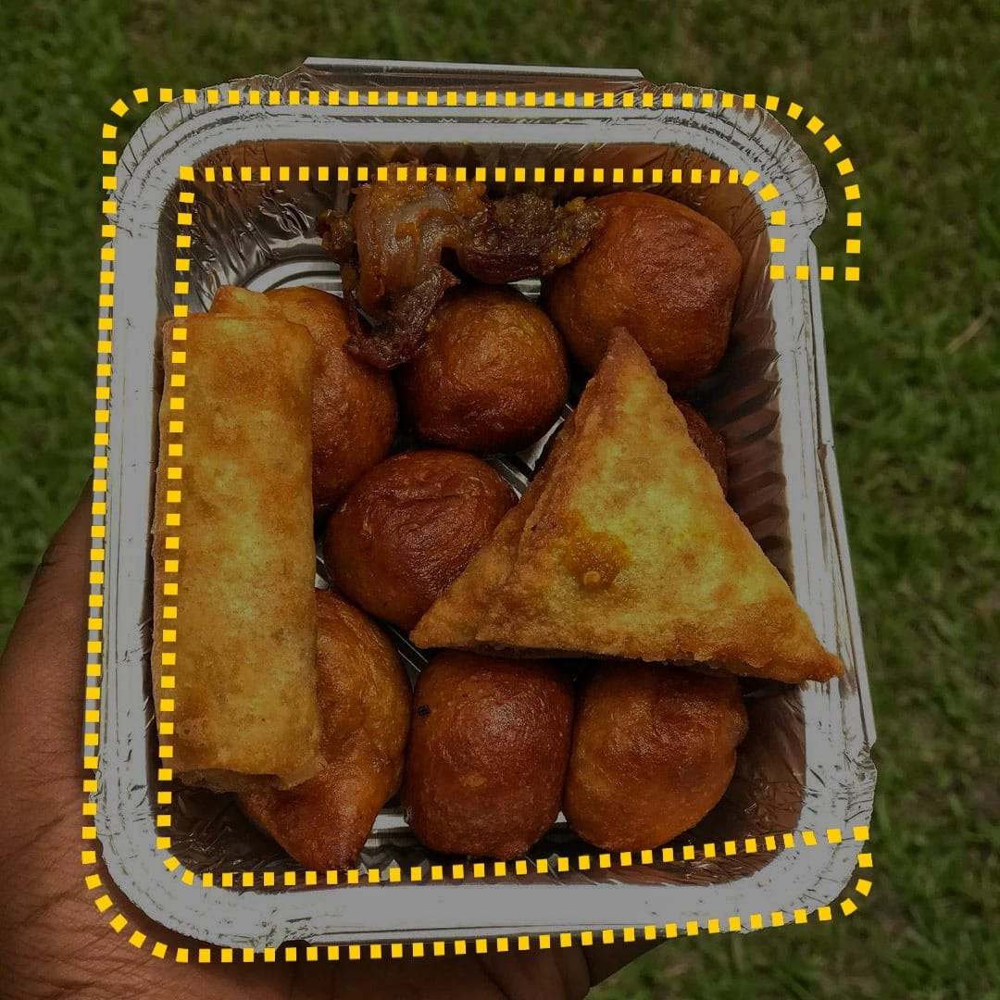
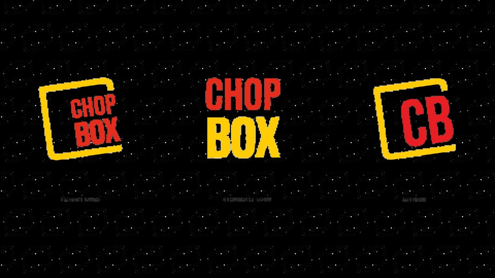
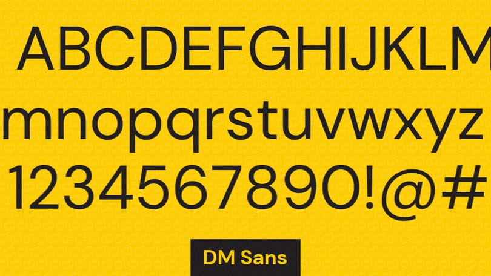
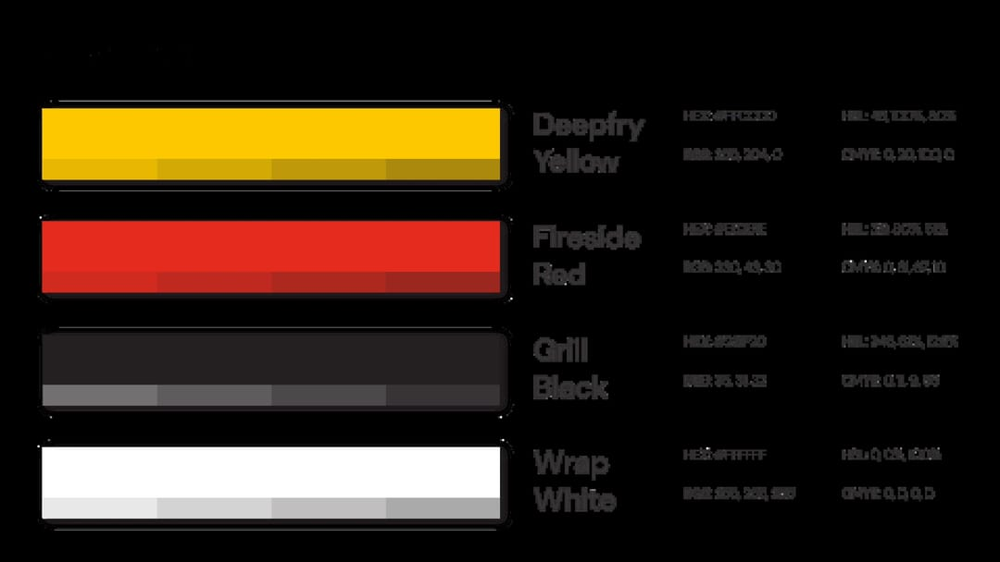
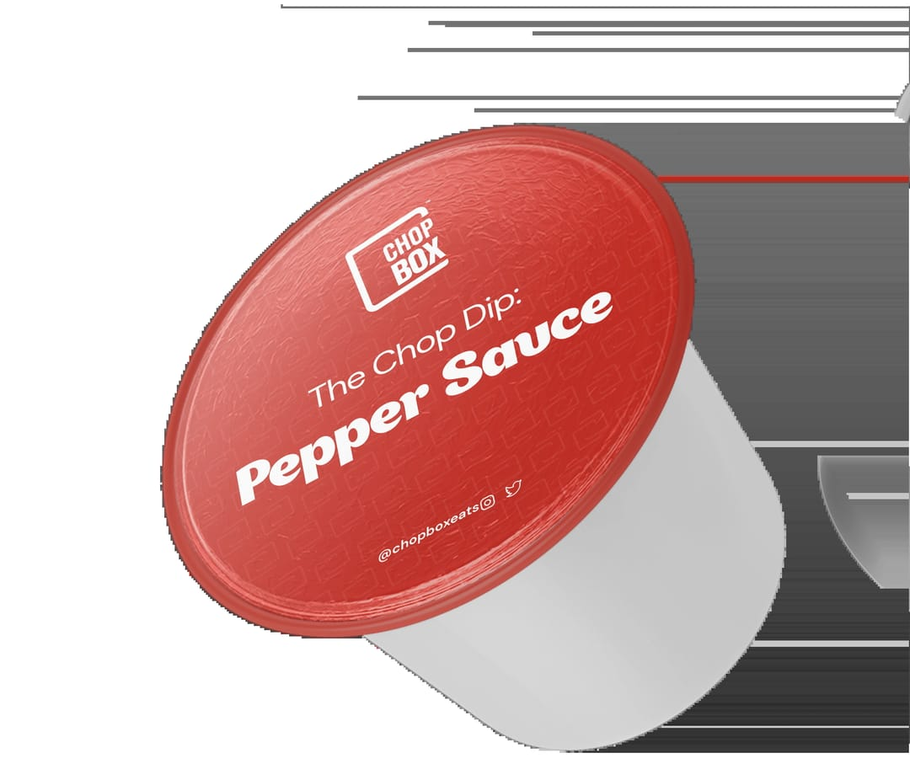
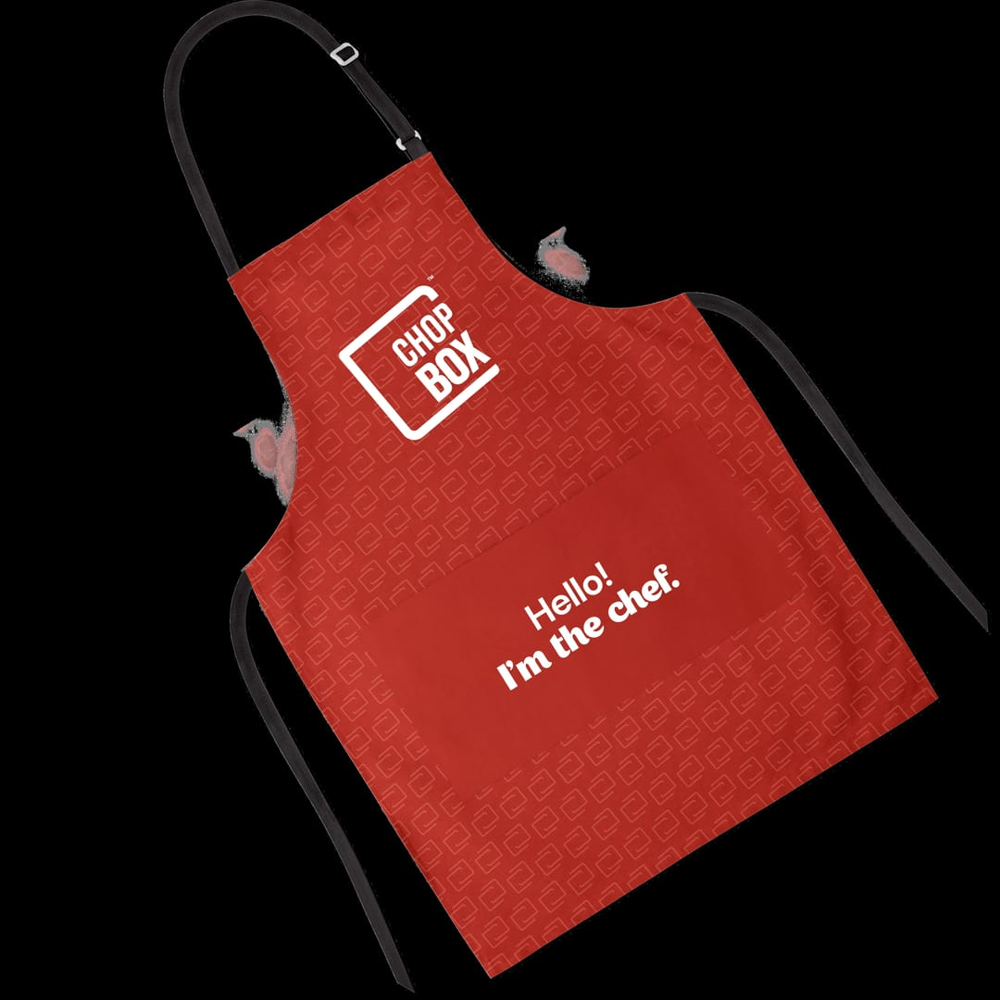
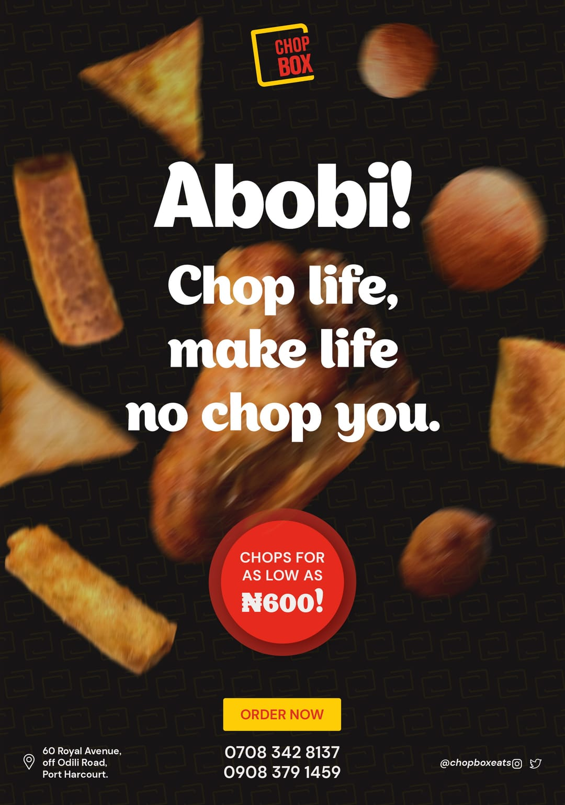
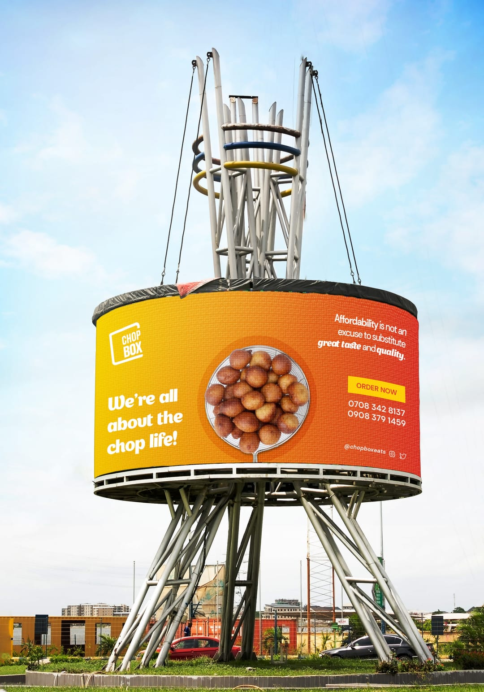

ChopBox
A food identity designed to feel warm, generous and ready to order.

The Chop Platter image combines prepared food with the yellow dotted campaign device.
- Context
- Independent brand identity commission
- My role
- Brand strategy, identity design and packaging
- Year
- 2022
- Deliverables
- Identity, packaging and rollout
Evidence ledger
What this case can prove
decision
Every identity choice was tested against one practical question: does this make the food feel worth ordering?
system
The lockups, toasted palette, DM Sans typography and direct verbal voice form one repeatable food-brand kit.
survival
Presentation visualisations test the system across packaging, uniform, campaign and outdoor formats; they do not prove production.
Bounded evidence
01 / Question
How can a food brand feel worth ordering before the first bite?
ChopBox needed an identity that felt warm, generous and immediately appetising before a first order arrived. The work began as an independent identity commission spanning strategy, packaging and rollout.
Food brands often reach for the same loud reds and delivery-app urgency. ChopBox needed enough energy to invite an order while still feeling considered, trustworthy and distinct.
02 / Governing decision
Use appetite as the filter
I built the identity from strategy out, checking each decision against one question: does this make you hungry? The filter kept the work focused on warmth, generosity and food rather than decoration.
A friendly rounded logotype and toasted yellow-red palette replace the category's harder, louder shorthand. The result aims to feel ready to order without making every application shout.

The full logo, wordmark and CB monogram provide three levels of the identity.

The type specimen records DM Sans as the supporting typeface.
03 / System
Build the identity for the box and the screen
The full logo, wordmark and CB monogram provide different levels of recognition. Deepfry Yellow and Fireside Red carry the appetite signal, while DM Sans keeps supporting information direct and legible.

Deepfry Yellow and Fireside Red anchor the palette beside black and white.
04 / System in use
Stress-test one voice across formats
Packaging, uniform, campaign and out-of-home visualisations test whether the same rounded voice and warm palette can remain recognisable at very different scales.
These images document intended applications. They are labelled as visualisations and are not presented as photographs of produced rollout materials. The surviving material does not verify which applications entered production or continued in team use.

A packaging visualisation applies the identity to The Chop Dip pepper sauce.

A uniform visualisation tests the direct verbal voice on an apron.

A campaign visualisation pairs the brand voice with small-chop imagery.

An outdoor visualisation tests the palette, logo and message at environmental scale.
05 / What survived
A useful filter makes the system cohere
The strongest connective tissue is not a single shape or colour. It is the appetite test: every part should make the food feel warm, generous and worth ordering.
Next project
Rivo